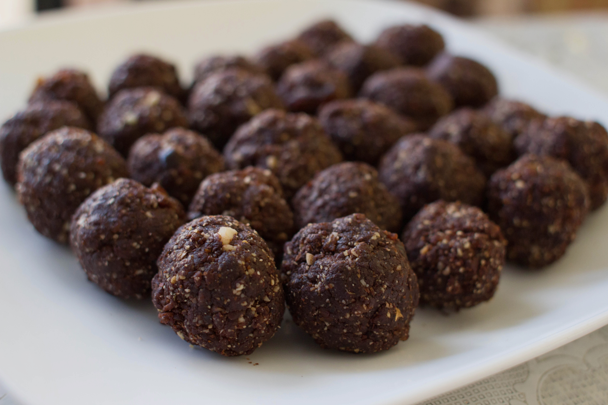
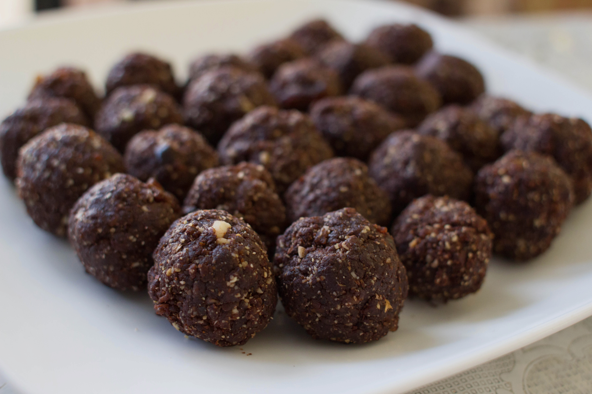

Admittedly, I used to hate the taste of dates when I was younger. I tried to avoid eating it whenever it was on the table. However, as I got older, I started to appreciate its extremely sweet taste.
After reading some recipes on vegan brownie bites, I instantly thought of dates. Its sweetness allows it to be used as a healthier sweetener in cooking.
I wanted to make this recipe for my father since he is a diabetic. This no-bake recipe creates a snack that is quick, delicious, and healthy.